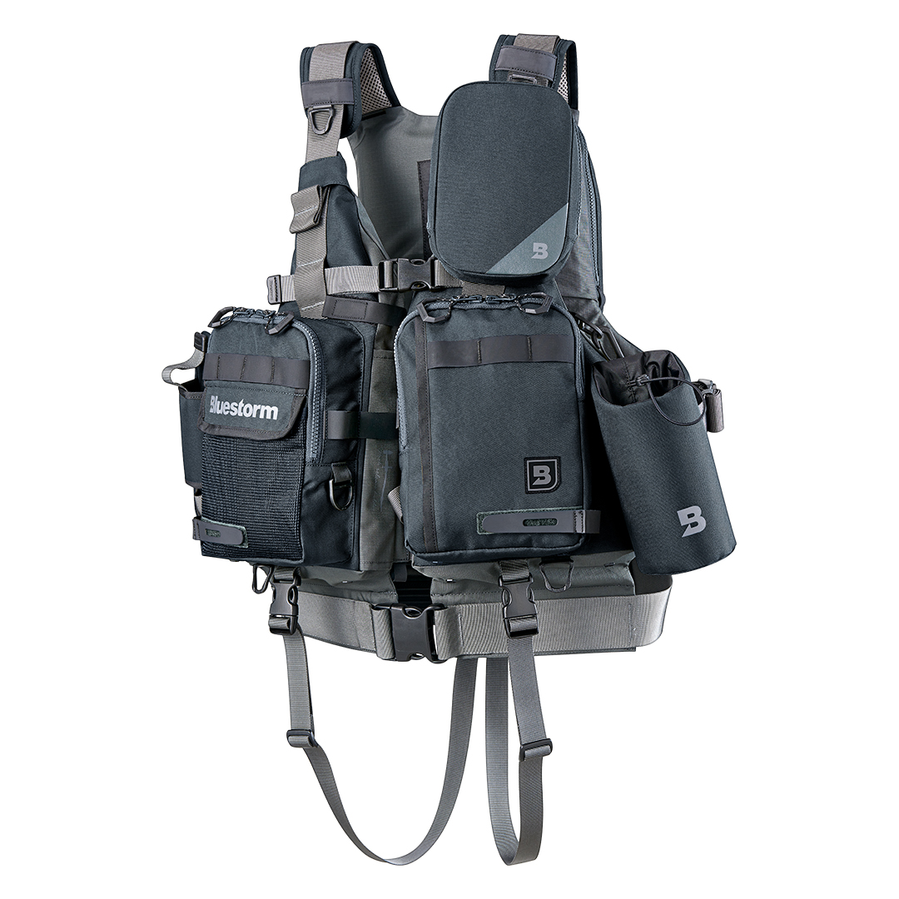
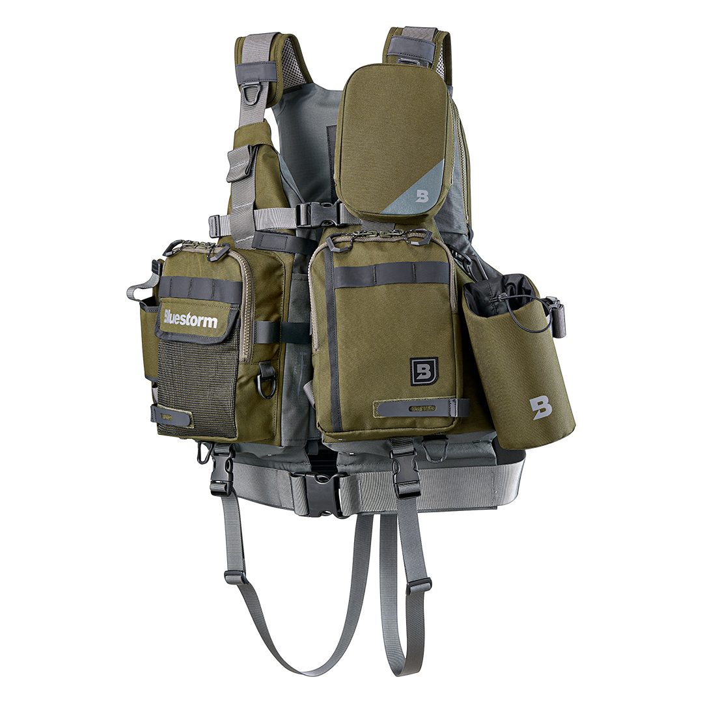
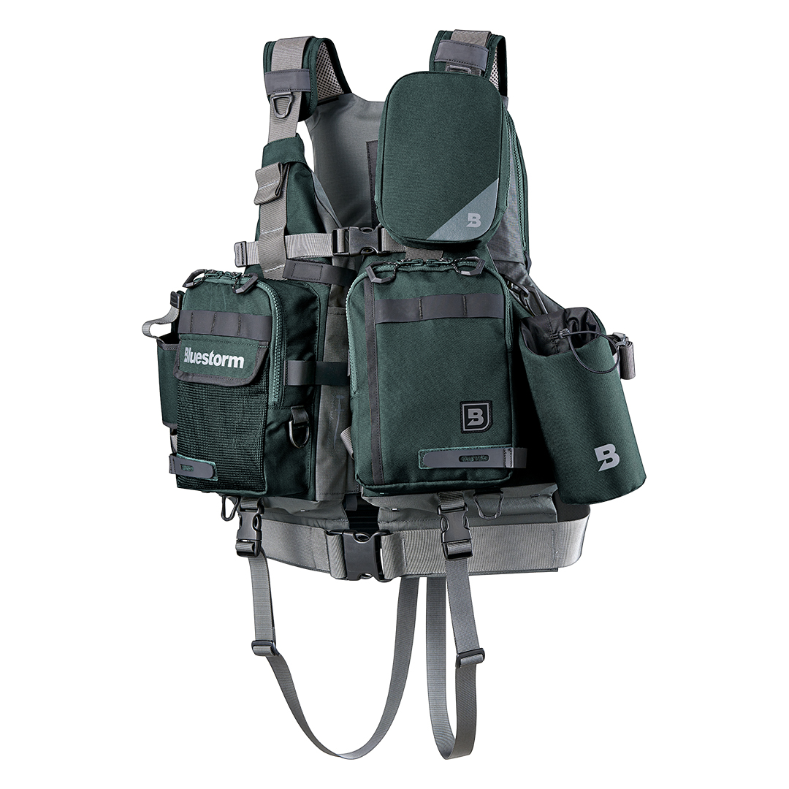

Réレバンテ2.0
Réレバンテ2.0は、ブルーストーム（高階救命器具）の固型式ライフジャケット（ゲームベスト）です。名作「レバンテ」を“Réコンセプト”で大幅にアップデートした次世代モデルです。
浮力材と一体になった大型のリブベルトで、重くなりがちな装備の負担を腰で支え、長時間のウェーディングでも疲れにくいのが最大の特徴。収納力もたっぷりで、最前線で戦うアングラーのためのハイスペックなゲームベストです。

画像出典:ブルーストーム公式HP
スペック
- メーカー
- Bluestorm（ブルーストーム／高階救命器具）
- 品番
- L2-BSJ45
- タイプ
- 固型式ライフジャケット（ゲームベスト）
- サイズ
- フリー
- 安全基準
- CS JCIマーク
- 付属品
- 大型ポーチ・ドリンクホルダー・プライヤーホルダー・フックリムーバーホルダー・緊急用ホイッスル
- カラー
- Lava Black／Hunter Green／Offshore Blue
- 価格
- 29,700円（税込）
▼今すぐチェック

Réレバンテ2.0の特徴
疲れにくさと収納力を極限まで高めた、次世代ゲームベスト
-
浮力材と一体の大型リブベルト
本体の浮力材とリブベルトを一体にした新しい構造。滑り止め付きの大きなリブベルトが腰をしっかりホールドして、肩への負担やポケットの重さを大きく減らしてくれる。
-
大容量のフロント・背面ポケット
フロントポケットには定番のルアーケース2枚＋薄型ケース2枚（左右で計4枚）がぴったり入る。背面ポケットは上下2つに分かれた大容量タイプに進化した。
-
ホルダー類を好きな位置に付けられる
ボディ全体にループがあり、付属のドリンクホルダーやプライヤーホルダーを自分の釣りに合わせて好きな位置に移動できる。フックリムーバーホルダーやフィッシュグリップホルダー、タモ用のDリング、フラッシャー用のループも付いている。
Réレバンテ2.0の使い方
着るときは、先に腰のリブベルトをしっかり締めてから肩のベルトを調整し、装備の重さを腰で支えるのがポイントです。肩で吊るすより、長時間でも疲れにくくなります。
背面ポケットは、上段・下段それぞれ500g以上の荷物を入れないようメーカーが注意しています。重いものはフロントポケットに入れ、背面は軽いものやレインウェアなどにしましょう。フロントポケットの底には水抜け穴があるので、ディープウェーディングで水が入ってもすぐに抜けます。
Réレバンテ2.0がおすすめの人
河口や干潟・サーフでのウェーディングなど、ルアーケースや小物をたくさん持って、長い時間歩いて釣りをする人におすすめです。
ルアーやプライヤー、フィッシュグリップがすぐ手に取れる位置にあると、ルアーチェンジや魚の取り込みが早くなり、短い時合いでも釣れるチャンスを逃しにくくなります。夜やマズメ時でも目立つ再帰反射材、緊急用のホイッスルも付いていて、安全面も安心です。
ワンポイント
ホルダー類は自由に動かせるので、プライヤーとフィッシュグリップは利き手で取りやすい側に、ドリンクホルダーは反対側に付けておくと、魚を取り込んでからリリースまでの動きがスムーズになります。実際に釣り場で使いながら、自分のやりやすい配置を探してみましょう。
カラー
Réレバンテ2.0のカラーを紹介します。
 Lava Black
Lava Black
汚れが目立ちにくく、どんなウェアとも合わせやすいブラック。

Hunter Greenアウトドアらしいオリーブ系のグリーン。

Offshore Blue深みのあるブルーグリーン。海の釣りにもなじむカラー。
画像出典:ブルーストーム公式HP
▼今すぐチェック
Réレバンテ2.0とあわせてチェックしたいアイテム
-
 Reカリフウエスト
ブルーストーム
詳細はこちら＞
Reカリフウエスト
ブルーストーム
詳細はこちら＞
同じブルーストームの腰巻きライフジャケット。荷物が少ない日は身軽に。
-
 フローティングベスト X-0III
アイマ
詳細はこちら＞
フローティングベスト X-0III
アイマ
詳細はこちら＞
重さを体の中心に集めて疲れにくいX型のフローティングベスト。
-
 ガネット Ver.2
アピア
詳細はこちら＞
ガネット Ver.2
アピア
詳細はこちら＞
シーバス向けのフローティングベスト。ほかのゲームベストと比べるなら。